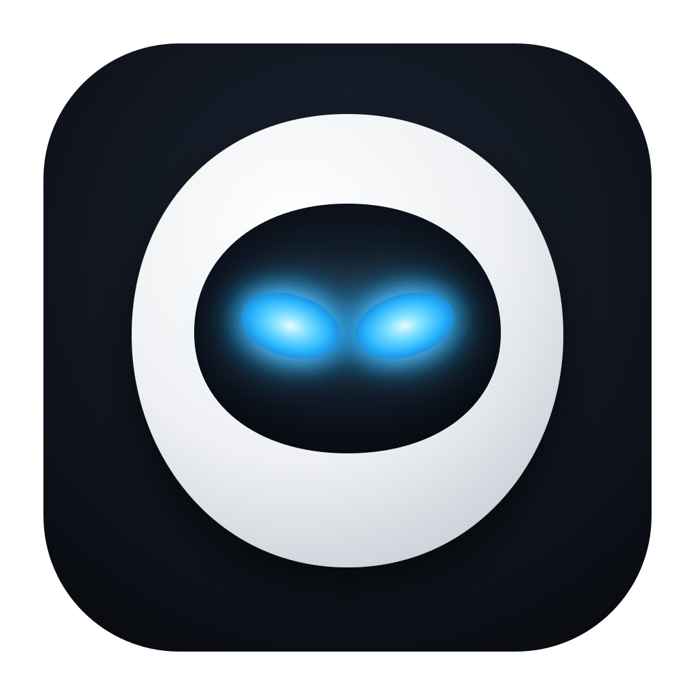

Eve
Markdown notes, synced with your Mac
1Install Eve
Android asks once to allow installs from this browser — allow it, then install.
Download Eve for Android2Connect to GitHub
Opens Eve with the code from your Mac. Once the code is authorized on GitHub there, the phone signs in and syncs by itself.
Open Eve and connect2Connect to GitHub
On your Mac: Eve → Settings → Sync & app → Android phone → Show QR, then scan it with this phone.
Open this page on your Android phone — scan the QR in Eve's settings with its camera.